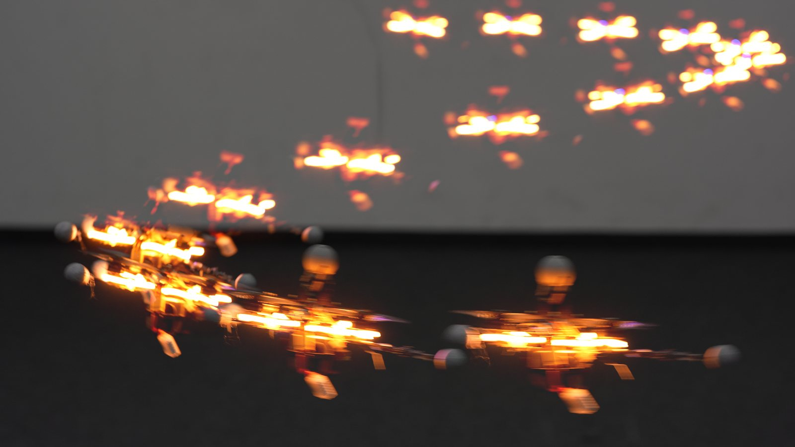
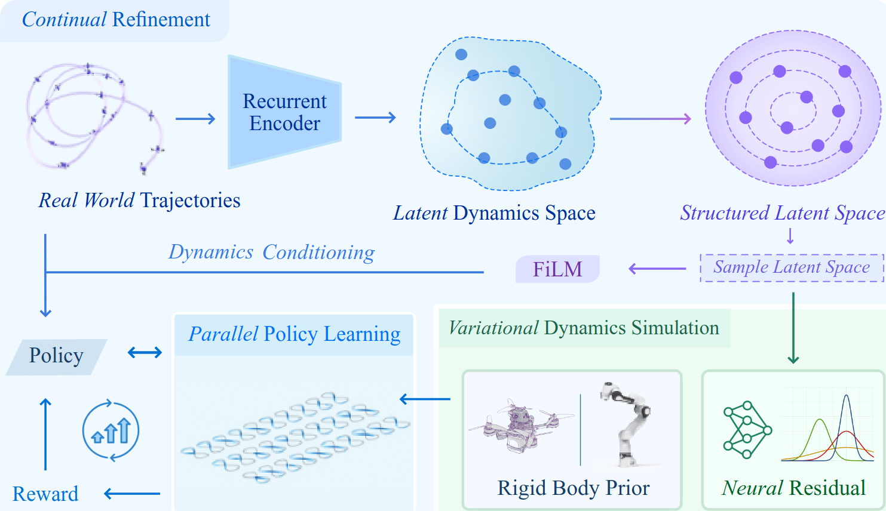
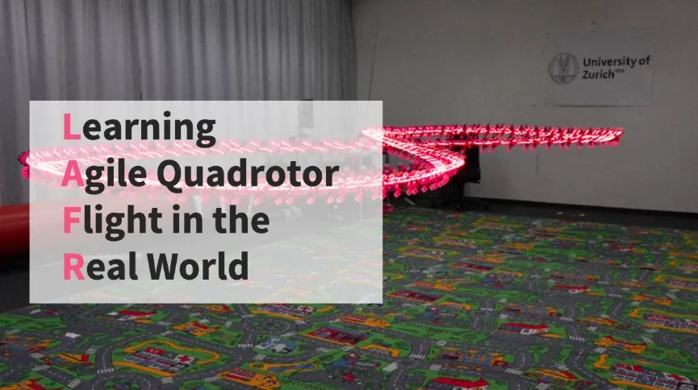
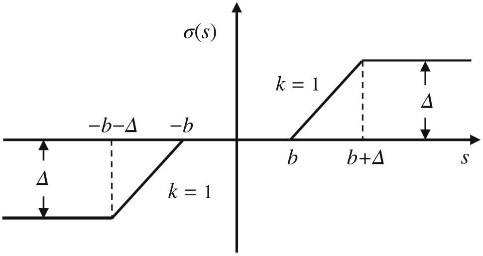
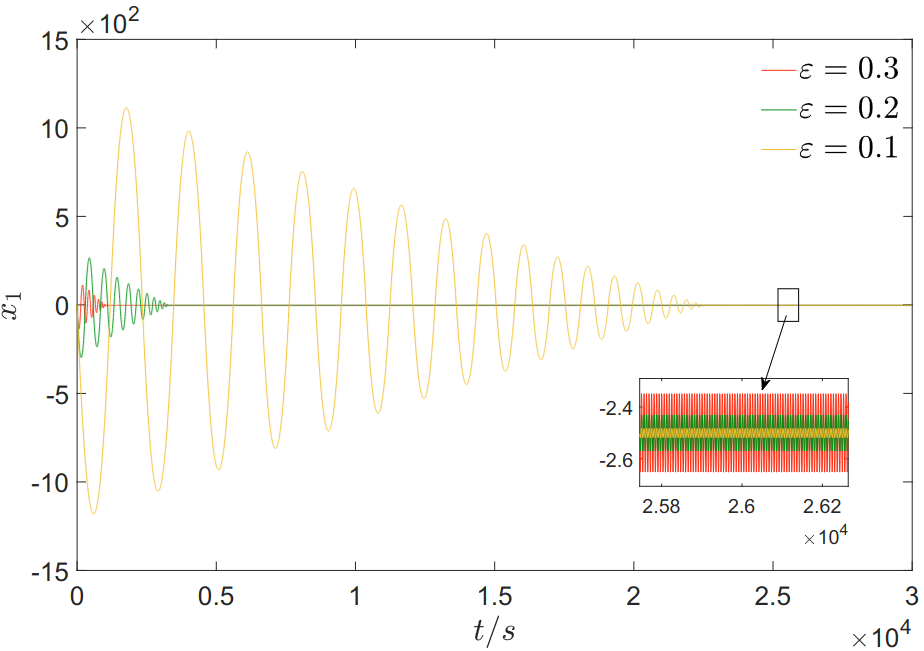

Hybrid Neural Dynamics for Online Policy Adaptation in Agile Flight
Under review, 2026Under review
I am a master's student in Robotics, Systems and Control at ETH Zurich. I work in the Robotics and Perception Group at the University of Zurich, led by Prof. Davide Scaramuzza. I also work closely with Prof. Yunfan Ren at the ORCA Lab.
Prior to that, I obtained my B.Eng. in Automation from Shanghai Jiao Tong University, working with Prof. Yuanlong Li and Prof. Zongli Lin on stabilizing constrained control systems.
My research interests are robot learning, learning-based control, reinforcement learning, and control theory. I want to develop robots that learn and act reliably in the real world.

Under review, 2026Under review

arXiv preprint, 2026Preprintsummary
A continual learning framework that learns a condition-aware dynamics model from real trajectories, combining a physics prior with a neural residual and a recurrent encoder that infers the hidden condition, so a deployed policy recovers recurring dynamics by recognition rather than re-fitting.

Robotics: Science and Systems (RSS), 2026summary
Adaptive temporal scaling, online residual learning and real-world-anchored short-horizon BPTT take a quadrotor from a conservative 1.9 m/s policy to 7.3 m/s in about 100 seconds of flight, with no offline system identification.

Control Theory and Technology, vol. 22, no. 3, pp. 468–478, 2024summary
A low-gain linear dynamic output-feedback law drives the double integrator into an arbitrarily small set in finite time despite sensor saturation, a dead zone and a bounded disturbance.

IFAC World Congress, 2023 · IFAC-PapersOnLine, vol. 56, no. 2, pp. 11383–11388summary
Shows that linear feedback can globally practically stabilize the double integrator when its output is saturated and corrupted by a bounded disturbance, and proposes a low-gain dynamic output-feedback law that achieves it; output saturation means not every state can be driven into an arbitrarily small set, and the paper characterizes what can.